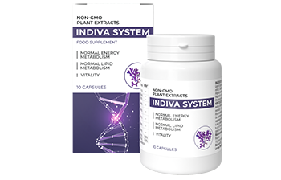

InDiva System con 50% de descuento solo hoy
¡Haga clic para obtener descuento en el sitio web oficial!
ORDENAR CON DESCUENTODietas famosas antes de InDiva System

La dieta Dukan
Se trata de un programa dietético basado en proteínas. El método Dukan se divide en 4 fases: "Ataque", "Orden", "Fijación" y "Estabilización". Cada una de estas fases tiene su propia dieta, duración y tipo de alimentos a utilizar.
Contras:
- Nocivo para los riñones
- Mal aliento
- Problemas de salud
- Avitaminosis

La dieta de los 6 pétalos
La esencia del método es la alternancia diaria de las siguientes monodietas: Pescado, verduras, pollo, cereales, requesón y fruta. El cambio constante del producto principal elimina la dependencia del organismo del componente y la "acumulación" de peso.
Contras:
- Recuperar los kilos perdidos
- Daños en el corazón y los vasos sanguíneos
- Mareos frecuentes

La dieta Atkins
En las dos primeras semanas, debe comer menos de 11 g de carbohidratos al día, tras lo cual debe aumentar lenta pero progresivamente su ingesta hasta 20 g. Al mismo tiempo, la carne, los huevos y el pescado están permitidos en cualquier cantidad.
Contras:
- Puede provocar cálculos renales
- Se necesitan muchos alimentos diferentes
- Pueden surgir problemas de corazón y tiroides
La revolución del adelgazamiento: InDiva System
El peso desaparece rápidamente sin perjudicar la salud. Restaura la salud del organismo
Contras: Ninguna
Con InDiva System puede consumir
Carbohidratos
Proteína
Grasas
InDiva System
InDiva System mejora el metabolismo transformando la grasa almacenada en energía. La pérdida de peso está garantizada todos los días.
PRECIO CON DESCUENTO:
InDiva System
DESTRUYE LOS ESTEREOTIPOS ALIMENTARIOS
Para que el metabolismo mejore y el organismo reciba correctamente las grasas y los hidratos de carbono, suelen hacer falta entre 7 y 10 días. En esta fase comienza la transformación activa de la grasa en energía.
Sin embargo, las dietas que implican eliminar completamente los carbohidratos de la dieta son muy complejas para las personas. Con las cápsulas InDiva System puede iniciar el proceso de adelgazamiento sin esfuerzo. El producto proporciona al cuerpo la norma de hidratos de carbono, proteínas y grasas para deshacerse del exceso de grasa.
PODEROSOS COMPONENTES EN LA COMPOSICIÓN
Extracto de hoja de ginseng
- Combate la grasa "rebelde", incluso la visceral
- Aumenta la utilización de calorías por el organismo
- Aumenta la capacidad de trabajo y la resistencia
Polvo de espirulina
- Estabiliza el metabolismo de los lípidos
- Limpia los vasos sanguíneos de colesterol "malo"
- Mejora la silueta, combate la celulitis
Extrato de fucus
- Refuerza el metabolismo de las grasas
- Previene la acumulación de grasa extra
- Mejora la función del páncreas
Extracto de naranja amarga
- Derrite rápidamente la grasa visceral
- Elimina la hinchazón
- Previene el engorde de los órganos internos
Opinión de los expertos sobre las cápsulas InDiva System
En el proceso de adelgazamiento, las grasas se disuelven en ácidos grasos y glicerina. Sin embargo, el proceso de adelgazamiento sólo comienza cuando no hay reservas de glucosa en el hígado y el tejido muscular, y suele durar de 7 a 10 días.
Para acelerar este proceso y quemar grasa rápidamente, recomiendo a mis pacientes el
suplemento InDiva System.
La acción principal del suplemento InDiva System es bloquear la
asimilación de los hidratos de carbono, que aportan glucosa y arrastran los kilos de más. Hay
que entender que InDiva System no tiene nada que ver con los quemagrasas � a base de cafeína. Las
cápsulas InDiva System no afectan al sistema nervioso, no pone nervioso y no crea problemas de
sueño. Las cápsulas InDiva System proporcionan un adelgazamiento sano y natural que sólo
aporta bienestar a tu cuerpo.
Jorge González, nutricionista español, especializado en
nutrición correcta, experiencia profesional: 30 años.
ORDENAR CON DESCUENTO
Comentarios sobre las cápsulas InDiva System
Preguntas frecuentes sobre las cápsulas InDiva System
¿Necesito hacer dieta o ejercicio para adelgazar?
Mostrar respuestaNo. Puede mantener un estilo de vida normal. Para perder peso, basta con tomar InDiva System.
¿Influyen las cápsulas InDiva System en el equilibrio hormonal?
Mostrar respuesta
A diferencia de muchos otros remedios para adelgazar, InDiva System no tiene ningún efecto sobre el sistema endocrino, por lo que puede tomar el suplemento sin preocupaciones.
¿Durante cuánto tiempo debe tomarse las cápsulas InDiva System?
Mostrar respuestaLa duración recomendada del ciclo de tratamiento es de 30 días. El ciclo puede repetirse, si es necesario, tras una pausa de una semana.
¿Qué indica el 99% de eficacia de las cápsulas InDiva System?
Mostrar respuestaEsto significa que 99 de cada 100 personas empiezan a perder peso cuando toman las cápsulas InDiva System. Independientemente del sexo, la estatura, la edad y el peso inicial. Los ensayos clínicos del remedio en la Academia Española de Nutrición y Dietética, realizados en , demostraron esta eficacia. En los ensayos participaron unos 1.000 voluntarios con sobrepeso. Todos tomaron las cápsulas InDiva System durante un mes. Según los resultados de la prueba, el 99% de los participantes perdieron peso (a partir de 10 kg) sin hacer dieta ni deporte.
Cómo trabajamos
REALIZAR UN PEDIDO
Inmediatamente después de rellenar el formulario de pedido, un operador se pondrá en contacto con usted para confirmar el pedido.
ENTREGA
El plazo de entrega depende de su región, pero no supera los 14 días. No se preocupe por su paquete.
PAGO
Pago contra reembolso
Garantías
Al comprar en nuestra tienda en línea, puede estar seguro de la alta calidad de los productos.